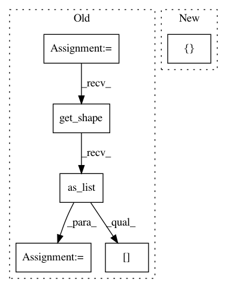

d86360af087d51f5e2cb2f9e57ddc95207fc3cd4,deeppavlov/core/layers/tf_layers.py,,cudnn_gru,#Any#Any#Any#Any#Any#Any#Any#Any#,498
Before Change
with tf.variable_scope(name, reuse=reuse):
gru = tf.contrib.cudnn_rnn.CudnnGRU(num_layers=n_layers,
num_units=n_hidden,
input_size=units.get_shape().as_list()[-1])
param = tf.get_variable("gru_params", initializer=tf.random_uniform(
[gru.params_size()], -0.1, 0.1), validate_shape=False)
if trainable_initial_states:
init_h = tf.get_variable("init_h", [1, 1, n_hidden])
init_h = tf.tile(init_h, (1, tf.shape(units)[0], 1))
After Change
num_units=n_hidden)
if trainable_initial_states:
init_h = tf.get_variable("init_h", [n_layers, 1, n_hidden])
init_h = tf.tile(init_h, (1, tf.shape(units)[0], 1))
else:
init_h = tf.zeros([n_layers, tf.shape(units)[0], n_hidden])
In pattern: SUPERPATTERN
Frequency: 3
Non-data size: 6
Instances
Project Name: deepmipt/DeepPavlov
Commit Name: d86360af087d51f5e2cb2f9e57ddc95207fc3cd4
Time: 2018-06-05
Author: yurakuratov@gmail.com
File Name: deeppavlov/core/layers/tf_layers.py
Class Name:
Method Name: cudnn_gru
Project Name: NifTK/NiftyNet
Commit Name: 6f405851fcb3be013441810be9a7edbbc04fd2a3
Time: 2018-05-15
Author: d.shakir@ucl.ac.uk
File Name: niftynet/layer/loss_segmentation.py
Class Name: LossFunction
Method Name: layer_op
Project Name: NifTK/NiftyNet
Commit Name: 5b5ea7b5d864e53894f5342f19becfba8f8035e5
Time: 2017-12-18
Author: wenqi.li@ucl.ac.uk
File Name: niftynet/network/interventional_dense_net.py
Class Name: INetDense
Method Name: layer_op